Et anonymt dansk satire-kollektiv.
Kunst uden algoritmer. Kulturkritik uden branding.
Vi har ingen interesse i dine personoplysninger.
Vi deltager ikke på markedets præmisser.
Objektiv Kritique er et non-profit kunstarkiv. Projektet eksisterer ikke for følgere, annoncer, sponsorater eller monetization. Det eksisterer for satire, kritik og kunstnerisk frihed.
Når algoritmer belønner bestemte følelser, former de også bestemte mennesker. Resultatet er mindre autenticitet.
Performer du også dig selv, før du mærker dig selv?
Projekter
Bande Bladet
Et online-magasin, der oplyser tæt på sandheden med en satirisk tone.
HVEM ER DU?
En kunstnerisk identitetsanalyse.
Abdul & Katja
En satirisk musikfortælling om identitet, social kontrol og performativ frihed.
Premiere 12. juni 2026Hadefilter™
Det kan være svært at vide, hvem man skal hade. Hadefilter™ hjælper dig med at finde den rigtige befolkningsgruppe at bebrejde for dine problemer.
Er du et godt menneske?
En algoritmisk undersøgelse baseret på EFFEKTIV ALTRUISME-teori.
Tastaturkriger?
Send dette link til en person, der ikke kan finde ud af at debattere på sociale medier.
Ikke designet til vækst.
Objektiv Kritique eksisterer uden reklamer, sponsorer eller kommercielle motiver. Projektet er ikke bygget til at skalere. Det er bygget til at forblive frit.
Anonymitet forventes. Branding er irrelevant.
Objektiv Kritique er åbent for samarbejde med kunstnere, der arbejder uden kommercielle motiver og uden influencer-strategi. Vi afslører aldrig nogens identitet, så skriv til os, hvis du har en idé, der passer til vores koncept.
Vi er også åbne for journalister, skoleelever og andre, der vil skrive projektopgave, artikel eller lignende om vores projekter eller om Objektiv Kritique generelt.
Kontakt: objektivkritique@proton.me